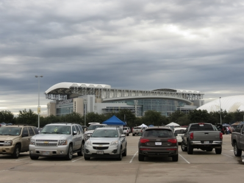
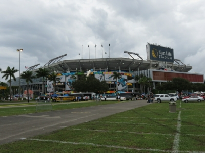

2013 Schedule/Results

Week: 1 2 3 4 5 6 7 8 9 10 11 12 13 14 15 16 17
| Weekly/Yearly Honors | |
|---|---|
| * | |
| * | Most points in a game (year) |
| * | Fewest points in a game (year) |
| * | Most lopsided victory (year) |
| Week 1 NFL Schedule |
|||
|---|---|---|---|
| DaBurgh Bears** | 84 | Rac Seekers | 45 |
| Itchy Tortugas | 61 | Fixated Yetis | 32 |
| Clitty Clitty Bang Bang | 57 | Georgia Bullheads | 43 |
| Kentucky Head Hunters | 46 | Ball Busters | 57 |
| Beer 'n Broads | 40 | Rhoads Roadies | 37 |
|
DaBurgh Bears bushwhack the Rac Seekers 84-45. The Newburgh newbies go nuclear when AP takes his first carry 78 yards to the house, then tacks on two more TDs before Eli and Victor cruise through Cowboys for 450/4 and 118/3, respectively - there's little D in Big D. The great white hooter hunters witness resurrections of sorts when Anquan Boldin comes out - in San Francisco, of course - with 208/1 while Stafford starts off with 357/2, but stop, drop and roll is the recommended play for this day. The Bears pop their fantasy cherry in a big way - and ain't that a fine howdy-do - as they put up a candidate for year's high score in the franchise's first-ever game, although putting all eggs in one basket could be Giant mistake, while the Seekers are left seeking a giant sphincter plug after getting torn a new one - maybe that explains the smell of BM coming from the locker room, or maybe it's just the B receivers (Boldin and Bryant) and M rushers (Martin and Murray). The Itchy Tortugas fillet the Fixated Yetis 61-32. The fidgety fajitas fail on their feet when MoJo (45/0) is scalped by Chiefs and Wilson (19/0) fumbles away a great opportunity, and the hands (Garcon 64/0, Julio Jones 76/1) aren't much better, but old man Manning stampedes a herd of Broncos with 462/7, tying an NFL record for most TD passes in a game. The squelched squatch do their best Clint Eastwood impersonation in the good (Gore 44/1 and Marshall 104/1), the bad (Ingram 11/0 and Calvin Johnson 37/0) and the ugly (Brady 288/2) - well, ugliest in his marriage, anyway. The Tortugas leave Thursday with a great chance at breaking the Ball Busters' 103 but end up looking like a one-trick pony - Peyton and the Pentapoos? - while the Yetis wake up Friday morning with a major Pey'n in the ass and look like they have a great chance at making a loser out of Brady. Clitty Clitty Bang Bang hang the Georgia Bullheads 57-43. The mound pound roll out Roddy (19/0) as a decoy while Foster (57/0) can only imiTate the best back in his own backfield, but Kaepernick picks apart the Pack with 412/3 and A.J. Green makes a stout Bear defense look like a lager with 162/2. The confounded confederates get a good day from Ryan (304/2), great day from Demaryius Thomas (161/2) and an okay day from Forte (50/1), but are done in when TY Hilton (20/0) scores less than Paris Hilton and Sproles (22/0) is not sprung. The Bang start their season off with a bang, which is majorly ironic since the owner hasn't experienced a bang in years, while the Bullheads return after a one-year hiatus in the same way they left - with a loss due to poor defense - and also left three two-TD days sitting on the bench. The Ball Busters buck the Kentucky Head Hunters 57-46. The acorn accosters have a nice pair - of performances - from two of last year's disappointments as McCoy (184/1) and Fitzgerald (80/2) return to 2011 form while Brees (357/2) is true to form for any year. The bourbon bathers are drunk with excitement as their Green Bay gamble pays off in spades with Rodgers' four of a kind - 333/3 - with 108/1 of those going to Cobb while Reggie fricken' Bush totals 191/1, but Antonio (71/0) and Bryce (25/0) leave big Brown stains on the stat line and any chance of victory is flushed down the toilet. The Busters get away with a win despite Ridley's fumblitis and Bowe's suckitis while the Hunters baffle everyone by leaving their top back Martin (45/1) on the bench - although it wouldn't have made a difference - as they must have the record books in mind by notching their ninth consecutive loss - two to go! Beer 'n Broads hit the Rhoads Roadies 40-37. Blue Moon 'n poon look to be all about the quarterback and kicker as Luck passes for 178/2 and runs for 38/1 and Zuerlein boots four FGs and a PAT and... well, that's three-quarters of the offense. The undermanned Iowans need to take the blinders off their receivers as VJax and AJohn combine for 300 yards and not a single stinkin' touchdown, so the leading scorers are Akers (10 points), the Texan defense (pick-six) and Newton (125/1). The Broads are certainly Lucky to win when 70% of the league scores more points, and are already in need of prayers for their fragile receiver AMENdola while the Roadies, like their namesake last week vs Northern Iowa, are on the losing end of one yawner of a pillow fight and, like last year, their D might be MVP of the O. |
|||
| Week 2 NFL Schedule |
|||
|---|---|---|---|
| DaBurgh Bears | 33 | Fixated Yetis | 40 |
| Rac Seekers | 29 | Clitty Clitty Bang Bang | 17 |
| Itchy Tortugas | 50 | Beer 'n Broads* | 51 |
| Kentucky Head Hunters | 45 | Rhoads Roadies | 27 |
| Ball Busters | 34 | Georgia Bullheads | 35 |
|
September 11 It's been twelve years. In tribute, the Tribute in Light from September 11, 2013: The Fixated Yetis skin DaBurgh Bears 40-33. The fleet bigfeet have cement shoes in the backfield with Gore (16/0) and Lacy (10/0), but their Marshall is in charge with 113/1, their Johnson is big with 116/2 and Bailey is the cream of the Dallas offense with 10 points. The burdened bruins suffer power outages all over the grid as SJax cracks after 0/0 (but nabs a touchdown reception), Peterson breaks 100 yards rushing without breaking the goal plane, and their Giant pair of... starters... score 20 and 18 points less than last week, so only Mike Wallace puts in a good 60 minutes with 115/1. The Fixateds shock the fantasy community by winning a game... well, that goes without saying, but winning a game despite Brady's small six is impressive while DaBurgh find themselves on the wrong side of the Manning meeting when Eli flips from four touchdown passes to four interceptions. The Rac Seekers split Clitty Clitty Bang Bang 29-17. The chalubbies chasers get 86'd by their 49ers when Boldin brings in 201 fewer yards than last week and Dawson is THE SF O with one field goal, but Bryant bounces back with 141/1 and Stafford tosses 278/1 and that's enough to get by their Pop Warner opponents. The plump pump are ticked by Kaepernick's 127/0, their colorful receivers' (Green and White) grey showing (41/0 and 21/0), and Rice getting fried after only 36/0, so the "highlight" is two two-pointers - a conversion for Foster, a safety for Seattle. The Racs become the second team in two weeks to win despite tallying the eighth-highest score, thanks in part to a defense that improves from worst (84 points) to best (17) in just seven short days, while the Clitty just can't find the magic spot, leaving their fans unsatisfied and looking elsewhere for stimulation. Beer 'n Broads float the Itchy Tortugas 51-50 in Our Defenses Faced Off And Scored Six Against Each Other Bowl. Lite 'n tights delight in a big load from Beast Mode with 98/2 on the ground and 37/1 in the air while Graham cracks the Bucs' backs with 179/1, but couldn't have done without Luck's 321/1 or Zuerlein's six in this close affair. The tortured tacos manufacture 307/2 from P Manning - 47/1 to blue and orange Julius - while Julio Jones justifies with 182/1, but bad backs (Daniel Thomas 30/1, Jones-Drew 27/0) and a really bad decision - benching Garcon (143/1) for Thomas (47/1) - are the backbreakers. The Beers are the league's only remaining lossless team and have their beloved team's beloved defense to thank for their beloved perfection while the Itchies are at it again: just like last year, losing with the second-highest score, and, just like always, making some eyebrow-raising transactions like dropping a receiver with 141/2 for one with 110/2. The Kentucky Head Hunters restrain Rhoads Roadies 45-27. The pumpkin bumpkins pack a powerful punch as Rodgers passes for 480/4 and Cobb catches 128/1 of 'em, but that's eight-ninths of the offense as Reggie Bush gets pounded and Bullock hits two PATs but misses three FGs. The psycho cyclones are led by Cam's 229/2, but the rest of the offense is mostly camouflaged as neither back scores a rushing touchdown, neither wideout scores a receiving touchdown, the kicker kicks three PATs and the defense snares a safety. The Heads snap a losing streak dating back to Week 8 of 2012 and can now focus on hunting down their first winning streak since RA only meant Resident Assistant, and brought back fond memories of college, while the Rhoads are the league's only remaining winless team as they match their namesake loss-for-loss, becoming the worst team in the league much like Rhoads' team is the worst in Iowa.
The Georgia Bullheads skate by the Ball Busters 35-34. The peach
leeches have their hometown hero Ryan head things up with 374/2
while Seabass boots a baker's dozen, but the only other score is
a wimpy 39/1 from Wesley as Forte and Sproles combine for 223
combined yards and no scores. The dangler stranglers are washed
away in the weather as Brees only bags 322/1 around a lightning
delay while Ridley (40/0) sloshes in the rain and Fitzgerald's
hammy gives the owner fits (33/0 in half a game), so Nelson is it
with 66/2. The Georgias taste victory for the first time since
Monica was pulling cigars out of her box for Bill in the Oval
Office while the Balls might want to consider rolling on the
Rivers (614/7) before their season blows away with the Brees
(679/3), especially after enduring the following on one
Sunday series:
Editor's Note: Two weeks in and there's one undefeated team,
one winless team and eight teams at 1-1.
|
|||
{kind=link}
| Week 3 NFL Schedule |
|||
|---|---|---|---|
| DaBurgh Bears | 18 | Kentucky Head Hunters | 21 |
| Rac Seekers | 23 | Itchy Tortugas* | 62 |
| Fixated Yetis | 32 | Clitty Clitty Bang Bang | 29 |
| Ball Busters | 45 | Beer 'n Broads | 35 |
| Rhoads Roadies | 45 | Georgia Bullheads | 21 |
|
The Kentucky Head Hunters shoot DaBurgh Bears 21-18 in Girlfight 2013: The Unwanted Sequel. The fortunate frontiersmen are indeed thanking their lucky stars when they are lucky enough to walk away with a win despite their top two stars, Rodgers and Morris, scoring single touchdowns, Cobb and Olsen putting up matching 54/0's and Mendenhall a morbid 29/0. The bearskin rugs don't even qualify as men-cubs after E Manning hurls (not in the arm-motion sense, but motion-sickness sense) 119/0 - dragging down Cruz (25/0) with him - while Wallace "adds" 22/0, Ball bags 59/0 and AP is Alone Player with 88/1, leaving Tucker as 67% of the offense. The Kentuckys move to 2-1 but have hired a CPA to verify that there really is a 2 in the W column after notching a scoring efficiency hovering down around Obama's approval rating at 33% while the Bears live and die by the Eli and might want to look into the Bradford exchange. The Itchy Tortugas deflate the Rac Seekers 62-23. The motivated mojitos mount a mile-high mauling as P Manning (374/3), Prater (3 FGs, 4 PATs) and J Thomas (37/1) have their way with the Oakland gay while the big bad Bear D runs in both an interception and a fumble. The boob browsers are stoked when Stafford strikes 385/2 into the heart of Washington, but the rest of the team is mostly whitewashed as CJ2K (90/0), Martin (88/0), Edelman (44/0) and Dawson combine for one point - you do the math. The Torts are on a tear and forcing the rest of the league to try and keep up with the Joneses (James, Julio, Maurice) - and Thomases (Daniel, Julius, Pierre), too! - while the Seeks were seen still staring wide-eyed at the TV Tuesday morning after their 23-21 lead vanishes like a fart in a hurricane on MNF. The Fixated Yetis shave Clitty Clitty Bang Bang 32-29. The horny hairies herald almost a dozen from Bryant (3 FGs, 2 PATs) and almost a baker's dozen from Brady (225/2), but aside from Calvin Johnson (115/1) the rest of the team is baked. The cherry clubbers climb on the Cincinnati charter as Andy tosses 235/2 - 46/1 in the direction of A.J. - but they know they are in trouble when Lamar Miller outrushes Arian Foster 62-54 and their Johnson, whom they affectionately call Stevie, only measures up to a 2. The Yets get to 2-1, just like last year - and we all know how that turned out - but now draw the three highest-scoring teams over the next four weeks while the Bangs are banging their head on the draft table since their Johnson is so much smaller than last year - things shrink with age, you know - and NFL defenses seem to have figured out Kaepernick's trick. The Ball Busters befuddle Beer 'n Broads 45-35. The nut knockers are left looking for anything at the end of Dwayne Bowe after he goes to pot with 4/0, so the two gold nuggets found on the day belong to Brees (342/3 plus a rushing TD) and McCoy (158/1) - better shine 'em and put 'em back! Coors 'n whores go homo for Romo, when he makes a rare appearance as a starter and even rarer appearance in the scoring column (210/3), and glam for Graham (134/2), but a lowly Viking (Rudolph 28/0) and know-know (Moreno 39/0) hurt and then Lynch hangs the team when he gets only 69 from the worst rushing defense in the universe. The Busts dust off the champagne bottles and celebrate with the '72 Dolphins at South Florida's largest nursing home after knocking off the last undefeated team while the Broads bid "adios, muchachos" to their six-game winning streak, but can at least feel good about that really being a two-game winning streak on either side of a two-game winning streak in last year's playoffs. Rhoads Roadies ruin the Georgia Bullheads 45-21. The Jack Trice lice get the camshaft cranking as Cam shafts a Giant waste of a defense for 223/3 with another 45/1 on the ground, and that's all that's needed so Charles' 92/1 and Pierce's 65/1 are unnecessary while Andre Johnson's 36/0 and Vincent Jackson's 34/0 are unnerving. The Mason-Dixie pixies get off the mat as they get off on their Matts (Ryan 231/2, Forte 87/1), but the rest of the team is a doormat thanks a little to Demaryius (94/0) and a lot to Darren (17/0) and TY (13/0). The Roads get off the snide, even before their namesake does, but best be wary when their best receiver on the week is Dolphins' #2 and McFadden is a better QB (16/1) than RB (9/1) while the Bulls are bullish on Broncos receivers - drafting all three - but just seem to keep picking the wrong one week in and week out, making it look like it was a bullsh*t idea. |
|||
| Week 4 NFL Schedule |
|||
|---|---|---|---|
| DaBurgh Bears | 41 | Rhoads Roadies | 32 |
| Rac Seekers | 35 | Georgia Bullheads* | 52 |
| Itchy Tortugas | 40 | Kentucky Head Hunters | 24 |
| Fixated Yetis | 49 | Ball Busters | 43 |
| Clitty Clitty Bang Bang | 39 | Beer 'n Broads* | 52 |
|
DaBurgh Bears disembowel Rhoads Roadies 41-32. The fuzzy Wuzzies frolic in a London fog after Peterson visits Big Ben in Wembley and runs away with 140/2 while back home in the States Cruz catches 164 of Manning's 217 yards - now that's an expression of true manlove - and all one of his touchdowns. The ISUs in need of tissues bring it with Big Ben and he brings in 383/1, but most everyone else is little led by McFadden (29/0), Hartline (34/0) and VJax (27/0) while half the offense comes off the left shoe of old man Akers. The Burghs finally opt to close the book of Eli and are all the happier for it, even taking time to kick back on the settee and enjoy a tasty fag - that's what they say in England, yes? - while the Roadies are paving a path to Loserville and are really yearning for last year's offensive MVP - the Bears defense - as this year's D is only bearish in terms of scoring. The Georgia Bullheads cup the Rac Seekers 52-35. The southern comfort are comforted by a couple Southerners as Georgia's Ryan rips off 421/2 while Louisiana's Sproles spots up a combined 142/2, then a couple Yankees finish the job with 86/2 from Colorado's Thomas and 95/1 from Illinois' Forte. The mammary mongrels are amazing in the air (Bryant 81/2, Boldin 90/1) but gruesome on the ground (Murray 70/0, Martin 45/0), and are done-for when Stafford gets only one passing and one rushing touchdown in Michigan's 40-point effort. The Georges are victorious despite having the first owner to NOT turn in a lineup this year and can thank Sproles for finding holes in the Miami D Monday while the Racs are at it again - getting scored on like Paris Hilton at any bachelor party - as they are on pace to break the record for most points allowed in a season by almost 100 - a record which they set just last year - and now have the baddest O to boot. The Itchy Tortugas torture the Kentucky Head Hunters 40-24. The talcless tortillas are in the tank thanks to Bernard (37/0), Jones-Drew (23/0), Julio Jones (108/0) and Julius Thomas (43/0), but Megaforehead swoops in to declaw the Eagles with 327/4 while Prater rides his coattails for a FG and... 7 PATs. The silly hillbillies are shocked when Mister Rodgers' neighborhood suffers its own governmental shutdown, and without their leadership in place the rest of the team wanders aimlessly about - Wilson (123/0), Forte (139/1), Morris (71/0), Antonio Brown (88/0) and Davis (18/1). The Itches, a.k.a. Peyton and the Five Poos, continue to roll on and roll to the front of the East with the surprising Fixated Yetis but are praying for that single level anterior fusion to hold while the Hunts are thrilled to be back playing with their Bush but are disheartened when Rodgers' replacement scores the same as Rodgers... despite 60 minutes more playing time. The Fixated Yetis scam the Ball Busters 49-43. The almighty almasti are alarmed by a Brady appearance that's NOT on the side of a milk carton as he milks 316/2 from Falcons while Frank gores Rams with 153/1, but the alarming line is from the receivers: Calvin 44/1, DeSean 34/0 and Charles 42/1. Wait... one, two, three? The cojones chokers are all choked up after Brees blows up for 413/4 on MNF to almost erase a 43-6 deficit, but choke away any chance of victory when McCoy and Powell each total around 100 yards but zero points - good thing the owner is sound asleep when Charles hits Claydirt late Monday night. Three receivers?! The Fixes avoid the tie on a technicality as they become the first, last and only team to get away with playing three receivers in a game after Charles Clay goes from last week's RB to this week's TE while the Balls could have won had they rung Big Ben's Bell in London as Le'Veon's debut goes for 57 and 2.
Beer 'n Broads pierce Clitty Clitty Bang Bang 52-39. Steel
Reserve 'n pervs have a nice balanced attack, which is surprising
for a team o' stumblin' alcoholics, as Luck (260/2), Lynch
(98/1), Richardson (60/1), Graham (100/2) and Thompkins (127/1)
all end up in the end zone. The button butlers begin beautifully
as Colin caps 167/2 Thursday night and Arian runs for 102/0 while
catching 69/1, but things get ugly quickly as A.J. acts like a
green receiver (51/0), Ray gets refracted a little early (17/0)
and Stevie... Stevie... uh, Stevie stinks with -1/0 - is
that what is termed an inverted Johnson? The Beer are all alone
atop the West, which is awesome considering they won it all just
last year, but maybe |
|||
| Week 5 NFL Schedule |
||||||
|---|---|---|---|---|---|---|
| DaBurgh Bears | 29 | Rac Seekers | 56 | |||
| Itchy Tortugas** | 71 | Clitty Clitty Bang Bang* | 8 | |||
| Fixated Yetis | 26 | Rhoads Roadies | 21 | |||
| Kentucky Head Hunters | 21 | Ball Busters | 40 | |||
| Beer 'n Broads | 56 | Georgia Bullheads | 24 | |||
|
While the status monkey is usually too busy during the regular season to deal with JPG embellishment in tribute to enthralling NFL stories, some are just way too juicy to pass up. So, without further ado...
The Rac Seekers smoosh DaBurgh Bears 56-29. The melon felons are gellin' like Magellan as Bryant (141/2) and Fred "F'n" Jackson (53/2) post pairs while Stafford (262/1) and Murray (43/1) secure singles, the lone remaining TD coming out of SF but not in the way you'd think - Boldin? Nah, 21/0. Pick-six from the D! The grisly grizzlies are all QB (334/2) and PK (4 FGs, 2 PATs) because to the Victor do not go the spoils (48/0), Colston leaves barely a Marques (15/0), Jackie loses the Battle with the Chiefs (38/0) and Montee is cut down to one Ball (1/0). The Seekers find a bit of revenge for the 84-45 drubbing they took back in Week 1 but need to shuffle the backfield now that Jackson and Murray hit their year's quota in one game while DaBears fail to take advantage of the league's dullest defense but, hey, at least they've won more than the Giants. A LOT more. The Itchy Tortugas lick Clitty Clitty Bang Bang 71-8. The sensational salsas surf the Manning tsunami as Peyton rifles 414/4 - and rips off a TD run on -8 yards rushing - with Julius Thomas (122/2) and Prater (15 points) riding in his wake to help crack seventy despite two O's from opposite ends of Ohio (Bernard 62/0, Cameron 36/0). The cherry poppin' baddies are teeny from head to toe, and especially in the middle, as Foster (98/0) comes close but comes up short so the team is relegated to Wayne's two-point conversion and Gostkowski's two field goals. The Torts run away in the fray of fossil franchises and look to be in a league by themselves (what the other nine teams have wanted all along) as they have by far the best offense (+50 points) AND defense (-35) while the Bangs bend over even farther as they lower the year's fewest points scored from 17 to 8 thanks to a scoring efficiency of 18%, which on the bright side is more than double congress' efficiency. The Fixated Yetis jettison Rhoads Roadies 26-21. The hairy hominids feel bamboozled by Brady after he bombs (197/0) before the Bengals, but Gore (81/1), DeSean Jackson (132/1) and Marshall (30/1) bring home just enough to sink their semi-professional foes. Paul's puny ponies have both backs break the barrier with Jamaal (108/1) and C.J. (66/1), but the other starters' backs are broken when the Panthers (Newton 308/0, Smith 60/0) pass out in the desert and a Ram (Austin 32/0) is chased down by Jaguars. The Yeti prove they can win even when Brady blows big balls and their Johnson is unable to perform, but a 4-1 record despite being outscored does not bode well for the future while the Rhoads are on the road, nay highway, to hell as they sit all alone in the jailhouse out West, watching through the bars as the tumbleweeds roll through their playoff aspirations.
The Ball Busters evade the Kentucky Head Hunters 40-21. The
pouch punchers aren't powerful as both running backs get in the
forties (McCoy 46/1, Jennings 41/0) while the receivers double
that (Gordon 86/1, Nelson 82/0), but Brees (288/2) and Hartley
(14 points) bury the Bears. The bean beatin' 'billies are bummed
when Rodgers doesn't light up the Lions (274/1), and it doesn't
get better when Davis (88/1) and Mendenhall (43/1) notch the only
other scores as Cobb outrushes (72-45) and outcatches (35-25)
Bush
The Beer 'n Broads inebriate the Georgia Bullheads 56-24. Buds
'n boobs have problems scoring at a Miley Cyrus concert -
probably because they're over 40 - with the likes of Lynch
(102/0), Richardson (56/0), Graham (135/0) and Amendola (55/0),
but Romo rear-mounts the Broncos and rides away with 506/5
to save the day. The downhome gnomes are two-thirds Crosby (5
FGs, 1 PAT) and five turds - Vick (105/0), Forte (55/0), Sproles
(10/0), Demaryius Thomas (57/0) and Welker (49/1). The Broads
improve to 4-1 as they continue to have their way with the weak
out West and appear to be the mirror-image of their beloved
|
||||||
| Week 6 NFL Schedule |
|||
|---|---|---|---|
| DaBurgh Bears | 23 | Clitty Clitty Bang Bang | 33 |
| Rac Seekers | 44 | Ball Busters | 37 |
| Itchy Tortugas | 35 | Fixated Yetis | 43 |
| Kentucky Head Hunters | 40 | Georgia Bullheads | 19 |
| Beer 'n Broads* | 46 | Rhoads Roadies | 40 |
|
Clitty Clitty Bang Bang cage DaBurgh Bears 33-23. The pooty putters cut a rug when Cutler cuts the G-woMen up for 262/2 while Green is good for 103/1, Foster 141/0 and Hauschka eight. Isn't that a great name? Hauschka. Gesundheit! (You know a team doesn't have many highlights when the conversation turns to someone's last name.) The winnie poohs poo-poo all over the place as Peterson (62/0), Ball (15/0), Cruz (68/0) and Colston (11/0) are all too foo-foo to produce, so it's Sam in Houston that does all the damage with 117/3. The Clitties get off their four-game slide and earn their first divisional win - it's truly amazing what can happen when you score four times more from one week to the next - while the Burghs fall into the Eastern cellar with the Bang with a bang, but at least they had the common sense to bench this - wonder if the owner wears a similar expression after hopping on the Giant train(wreck) during the draft. The Rac Seekers tweak the Ball Busters 44-37. The ta-ta trackers turn up mostly mosquito bites when none of their backs (Fred Jackson 35/0, Murray 29/1) or receivers (Bryant 36/0, Boldin 28/0) get beyond the thirties, but they run their QB up the Stafford to see if he flies... and he does (248/4). The fig fracturers flaunt some fine yardages with McCoy (116/0), Gordon (126/0) and Nelson (113/1) all earning performance points, but the other Mac in the backfield is far from big (McGahee 37/0) and the Brees is too calm (236/2) to sail anywhere victorious. The Racs pull back to a non-winning non-losing record after the 1-3 start but have to worry after Murray disappears in a hurry with a knee injury while the Balls are left asking themselves "Ridley me this - who's responsible for more backfield shenanigans than Shanahan?" You bet your d*ck it's Belichick, as Stevan was supposed to be "eased back into the rotation" but ends up with 96/2. Hasa diga eebowai! The Fixated Yetis fry the Itchy Tortugas 43-35 in the Battle of Two Beasts of the East. The fervid furries are bereft of Brady after another bomb (269/1), but both receivers get touchdowns sans yardage (Marshall 87/2, DeSean Jackson 64/2) while both backs get yardage sans touchdowns (Lacy 120/0, Gore 101/0), which leaves their foes sans victory. The chafing chimichangas are cheerless after Manning is meek (295/2) on the meek (JAC), so six-spots from Giovani (72/1 receiving), Julius (22/1) and the defense aren't enough to keep the team from going six feet under. The Fixes finally have first all by their lonesomes but fret over their signal-caller situation now that Brady has been outflanked by Flacco - maybe the old Patriot is too busy munchin' on Bundchen - while the Itchies, seeing their three-game winning streak scratched, blow a gasket, but things like this will happen when you put half your eggs in one basket.
The Kentucky Head Hunters decapitate the Georgia Bullheads 40-19
in the league's first-ever Head Banger's Ball Bowl. The KY heads
do seem all nice and lubed up after Vernon violates the
vulnerable Cardinals for 180/2, then pound it home taking
advantage of a Bush's receiving ability (57/1)... oh, and
Rodgers' unusually-strong right hand (315/1). Firm grip! The GA
heads get general admittance tickets to their own funeral after
they ride into battle without a field general, leaving the
privates (Forte 67/0, Sproles 15/0, Thomas 78/0 and Welker 63/1)
to get their privates handed to them on a platter. The Kentuckys
prove they have the biggest head in this
Beer 'n Broads berate Rhoads Roadies 46-40. Schlitz 'n tits take some big hits when Graham (0/0) cracks his ankle and Amendola (1/0) cracks his noodle while Romo (170/1) washes out against Washington, but Knowshon and Marshawn fill in as receivers (62/0, 78/0) and fill'er up as backs (42/3, 77/2). Those guys are on! Or is it awn? Tomayto, tomahto. Ames' lames are relatively tame as a couple get a couple (Vincent Jackson 114/2, Charles 78/2) but the rest of the bunch - Roethlisberger (264/1), Spiller (55/0) and Andre Johnson (88/0) - don't get much. The Beers open up a two-game lead out West but pay a heavy price as their top two receivers - jimmied Jimmy and dainty Danny - were last seen receiving IVs while the Roadies' decline has the other nine looking down on them and their league-worst 1-5 record - maybe an Iowa State upset of Baylor this weekend will make them feel all better. |
|||
{kind=link}
| Week 7 NFL Schedule |
|||
|---|---|---|---|
| DaBurgh Bears | 16 | Georgia Bullheads* | 55 |
| Rac Seekers | 41 | Kentucky Head Hunters | 34 |
| Itchy Tortugas | 37 | Ball Busters | 15 |
| Fixated Yetis | 42 | Beer 'n Broads | 28 |
| Clitty Clitty Bang Bang | 20 | Rhoads Roadies | 34 |
|
The Georgia Bullheads hunt DaBurgh Bears 55-16. The
rabble-rousing rebels send the Matts up to bat, and after both
Ryan (273/3) and Forte (91/3) go deep three times and Logan's run
back of an interception, their opponents have that
The Rac Seekers trap the Kentucky Head Hunters 41-34. The twin peak mountaineers are seemingly stuck between a rock and a hard place when Randle (65/0), FJax (36/1), Gronk (114/0) and Bryant (110/0) don't get near their summit, but the expedition is rescued when Staff is over half (357/3). The loco yokels are crazy about Rodgers' 260/3 and Vinatieri's 3 FGs and 4 PATs, but the rest of the team is lazy with Martin (95/0), Reggie Bush (50/0), new-acquisition Jeffery (105/0) and Davis (62/0) only able to drum up three performance points. The Seekers three-game streak of positivity has them back on the positive side of .500, although losing their favorite Martin - and fourth-overall pick - is a big negative, while the Hunters are happy to have another homey (Bear) in the house, but have to temper that with the fact that next week is a bye and Cutler has gone bye-bye for weeks.
The Itchy Tortugas baste the Ball Busters 37-15. The
The Fixated Yetis spill Beer 'n Broads 42-28 in the Battle of
Bests from East and West. The fornicateless furballs ground out
good games from Gore (70/2) and Lacy (82/1) in support of
Megatron transforming 155 receiving yards into two touchdowns,
all of which erase Brady's bummer (228/0) and DeSean's dezero
(21/0). Modelo 'n bimbos counter with good ground games from
Lynch (91/1) and Moreno (40/1) while Romo one-ups Brady with
(317/1), but unfortunately Gonzalez (30/0) and Thompkins (16/0)
aren't big enough to carry the jock for Calvin's Johnson. The
Yetis knock off the other two one-loss teams in
Rhoads Roadies rail Clitty Clitty Bang Bang 34-20. The harmless farmers are a few crops here (Charles 86/1, Spiller 11/0), few livestock there (Roethlisberger 160/1, Andre Johnson 89/0), but the cash cow is VJax who Bucs the Falcons for 138/2. The crus bus are hurtin' for certain as Cutler (28/0, groin), Foster (11/0, hamstring) and Wayne (50/0, knee) all get banged in the worst way, leaving Rice (45/0) and Green (155/1) as the only healthy starters to make it to the showers. The Rhoads figure out their threshold for picking on the crippled as they can't beat a team minus two players (see last week) but can beat a team minus three while the Bangs get banged from here to eternity, wrapping up the year's Kiss of Death Award in one fell swoop - so much for lucky number (Week) 7. |
|||
| Week 8 NFL Schedule |
|||
|---|---|---|---|
| DaBurgh Bears | 21 | Fixated Yetis | 60 |
| Rac Seekers | 48 | Itchy Tortugas | 43 |
| Clitty Clitty Bang Bang | 38 | Georgia Bullheads | 41 |
| Kentucky Head Hunters | 31 | Rhoads Roadies | 37 |
| Ball Busters* | 65 | Beer 'n Broads | 33 |
|
The Fixated Yetis nix DaBurgh Bears 60-21 in I Wish I Woulda Picked A Real Quarterback Bowl 2013. The bristly bush babies are almost a mirror image of last week as Gore (71/2) and Lacy (94/1) score the same number of touchdowns on a few more yards, Johnson scores one more point on a few more yards... okay, A LOT more yards (329/1), and Brady (116/1) and DeSean Jackson (63/0) jack off. The ruined bruins lie in ruins as Eli Manning pitches another shutout with 246/0 (he'd be in the running for the Cy Young Award if playing for the Mets), Wallace (a WR) outrushes SJax (a RB) 8-6, and Josh Brown is 71% of the offense (and 100% of the Giants' offense) with five field goals. The Fixateds sweep away the Bear hair and earn the league's best record by two games - and this with top-pick Brady ranked as the 23rd quarterback, scoring the same as Locker and Roethlisberger and less than Tannehill (WTF!) and Geno Smith (WTF²!) - while the Burghs are burgeoned with a four-game losing streak as they go from 2-2 and feeling cool to 2-6 and sucking d... uh, drumsticks, while watching Ball score his first NFL TD from the bench after five straight scoreless weeks as a starter. The Rac Seekers scratch the Itchy Tortugas 48-43. The breast burglers are Dezzy with excitement as Bryant mows down Motown with 72/2 while Fred Flintstone, er Jackson (Freudian slip based on his Stone Age age) flogs 45/1, Stafford affords 488/1 with a rushing touchdown and the defense provides the winning six. The flaming flautas feast on Blaschke's faves as Broncos (P Manning 354/4, Prater FG and 6 PATs) and Dolphins (Daniel Thomas 5/1 receiving) account for all the scoring while Bernard (18/0), Garcon (46/0) and Julius Thomas (29/0) are all boring. The Racs' four-game losing fast gets them way out of last, so now all they have to worry about is their prima donna Dez, who just figured out that he cannot do whatever Calvin Johnson can do (329 to 72), while the Itches are top dogs in offense and defense but dead dogs in the won-loss column, and hope to abstain from the bane of their orange Julius feeling the pain of an ankle sprain. The Georgia Bullheads clip Clitty Clitty Bang Bang 41-38. The Macon makeovers are marred by Sproles' black hole (0/0), but both Broncos bring home the beef (Welker 81/1, De Thomas 75/1), Ryan gets one in the fourth to salvage the day (301/1), Crosby cans a Mason jar full of points (3 FGs, 5 PATs) and the victory is delivered by Joique Bell - 31/1. The joy buzzer beaters wrangle Bengals as Dalton's A gang from Ohio (Andy 325/5, A.J. 115/0) keep them within 41-36 going into Monday night with a receiver, kicker and defense on tap - no problemo, right? Result: Rice (0/0), Hauschka (2 PATs), defense (usual zero), choke, loss. Gesundheit! The Georgias feel gorgeous with a two-game winning streak that gets them back to .500 but pray the sweat stain on the couch isn't permanent after enduring the MNF from hell while the Clits keep absorbing hits as they lose their second player for the year in two weeks after being served two servings of fried Rice - one on the menu (Sidney), one not (Ray). Rhoads Roadies rend the Kentucky Head Hunters 37-31. The plower power are sour after Charles is jammed (74/0), VJax is back to normal (79/0) and Hartline is... normal (37/0), but Newton's third law dictates those negative vectors are countered by positive ones: Cam (221/2 plus 50/1 rushing) and McFadden (73/2) - against the Steel Curtain, no less. The bluegrass true bass hook a few nice ones with Aaron (285/2), Alfred (93/1), Reggie (92/1) and Vernon (52/1), but Antonio is the one that gets away (82/0) and Henery should just be thrown back into the free agent pool because he's too small to keep (1 PAT). The Roadies take heart by winning two in a row after the 1-5 start but now head off to face a team with two more wins than their last two opponents combined while the Heads are sinking fast due to stinking vast, but one might expect a team with so many Bushes in the backfield to get pounded a lot.
The Ball Busters blitz Beer 'n Broads 65-33. The testicle
tacklers tack it on in Drew's triumphant return with 332/5 while
Larry (48/1) and Le'Veon (24/1) add some salt to the wounds and
Jordy makes it really hurt by vanquishing the Vikings
Sunday night with 123/2 plus an ass-plant on the one-inch line.
Strohs 'n hos are mostly X's and some O's as they're led by Romo
(206/3) and Moreno (89/1 receiving) while Lynch (23/0), Rudolph
(51/0), Gonzalez (26/0) are let-downs and Zuerlein comes up 11
field goals short of the 14 necessary to win it Monday night.
The Balls go |
|||
| Week 9 NFL Schedule |
|||
|---|---|---|---|
| DaBurgh Bears | 14 | Itchy Tortugas | 28 |
| Rac Seekers | 30 | Clitty Clitty Bang Bang | 20 |
| Fixated Yetis* | 60 | Rhoads Roadies | 17 |
| Kentucky Head Hunters | 28 | Beer 'n Broads | 46 |
| Ball Busters | 39 | Georgia Bullheads | 14 |
|
The Itchy Tortugas scare DaBurgh Bears 28-14. The pequeño taquitos turn the keys of the Ferrari over to RG3, but the big zero drives it like a Yugo (291/0) with scoreless heroes Daniel Thomas (38/0) and Cameron (4/0) crammed in the back seat - fortunately, a couple of Europeans know how to play "real" football and save the day (Giovani 79/2, Pierre Garcon 172/0). The gentle Bens pick up a couple free agents who look good on paper but end up no better than toilet paper (Alex Smith 124/0, Stills 35/0), and with a couple others wiped clean (SJax 57/0, Heath Miller 43/0) it all flows down to Peterson and his 140/1. With half their regulars on a Rocky Mountain bye, the Tortugas were dreading this day on the schedule for weeks but end up picking on the weak as the stay in the chase for the East while the Bears' losing streak stretches to five as their inaugural season is quickly becoming inaudible, being six games out of first with six games to go. The Rac Seekers poke Clitty Clitty Bang Bang 30-20. The tito banditos find themselves without their locker-room leader, but replacement Jake is better off stuffed in his Locker with 185/0 - along with FJax (77/0), Murray (31/0) and Bryant (64/0) if they fit - so it's University of Arizona alums to the rescue with Gronkowski (143/1) and Folk (4 FGs and 2 PATs). The little boys in the boats are sunk from the get-go when Foster pulls up lame before the game while the able-bodied folks (Dalton 338/0, Rice 17/0, Green 128/0, Stevie Johnson 36/0) aren't able to score any touchdowns, leaving Gostkowski's 7 PATs and 2 FGs. The Seeks strive to feel alive as the winning streak hits five but may just be talkin' jive as they have twice as many wins as losses despite being outscored while the Bangs are devoid of glee as the losing streak hits three thanks to being the most offense-free, averaging just 25 points per game, which is wee. The Fixated Yetis pave Rhoads Roadies 60-17. The winning windigos are grinning gringos - and breathe a collective sigh of relief that's been building all year long - as they finally benefit in a bunch from Brady (432/4) while Lacy and DeJax each post rounds of 150/1 although, with the game well in hand, the league front office is sure the owner would have preferred two rounds of 151. The prairie fairies are indeed as light as a feather but their wands pack no punch as McFadden (12/0) casts another sleeping spell on his hamstring while Charles (90/0), Steve Smith (52/0) and Hartline (39/0) are powerless to score, leaving Newton (249/1 with 22/1 rushing) as the only good elf. The Yetis feel great with a winning streak of eight as they bag a 60 two weeks in a row - better keep these gerontophiles away from the nursing homes - while the Rhoads relower the level of scoring incompetence to 26% - at least for a team with six actual starters *cough* Georgia Bullheads *cough* - and might want to take advantage of Keenum's manlove for Andre Johnson (229/3) before it dries up. Beer 'n Broads inebriate the Kentucky Head Hunters 46-28. Leinies 'n hineys let loose a "blimey!" as Romo stings Vikings with 337/2 while the owner spreads his tight ends to cover both sides of the field, then kicks back with a cigarette - and satisfied look - after taking in 116/2 (Graham) and 35/1 (Rudolph). The rustic rubes behave like newbs when Rodgers (27/0) can only shoulder three minutes of playing time and Antonio Brown (71/1) gets benched with three minutes left due to lack of "quality execution" so Morris (121/1) and Jeffery (60/1) do the best they can do. The Broads sober up and seem fully recovered from last week's dowsing as they maintain their slim lead in the West - when's the last time you heard "slim" and "Beer 'n Broads" mentioned in the same sentence? - while the Hunts need to track down a new stud for the team after their top pick and prize steed pulls up lame, leaving them at the back of the Western pack headed into the homestretch. The Ball Busters bye the Georgia Bullheads 39-14 in the At Least My Bell Tolled Bowl '13. The marble mashers miss out on any meaningful catches (Nelson 67/0, Gordon 44/0) while Le'Veon Bell rings up a bunch of yardage (139) and no scores, but both Brees (382/2) and Ridley (115/2) outscore their demi-opponents. The antebellum absentees ante up two receivers (Demaryius Thomas and Welker) and a back (Joique Bell) on byes and see Sproles (2/0) strain his brain early in the game, leaving just Ryan (219/1) and Crosby (8 points) as the last men standing. The Busts continue to throw down sausage at Westfest as they improve to 5-1 within the division but have several games ahead against the East, which is as unwanted as Incognito voicemail, while the Bullheads should just go ahead and petition the league to shorten their name to Bulls since their owner apparently no longer uses either one of his heads. |
|||
| Week 10 NFL Schedule |
|||
|---|---|---|---|
| DaBurgh Bears | 26 | Clitty Clitty Bang Bang | 38 |
| Rac Seekers | 27 | Fixated Yetis | 45 |
| Itchy Tortugas | 46 | Beer 'n Broads | 31 |
| Kentucky Head Hunters | 22 | Georgia Bullheads* | 50 |
| Ball Busters | 47 | Rhoads Roadies | 15 |
|
Clitty Clitty Bang Bang spay DaBurgh Bears 38-26. The beaver
cleavers are in a rush to retreat after rushers Ray Rice (30/0)
and Lamar Miller (2/0) are hushed, but the Cincinnati Connection
passes examinations with straight A's - Andy's 274/2 and A.J.'s
151/1 - while the main haul is had by Hauschka with 4 FGs and 3
PATs. Gesundheit! The fuzzy Fozzies are flatter than Kate Moss
in a push-up bra as Eli Manning (140/1), Steven Jackson (11/0),
Cruz (37/0) and Wallace (15/0) all push up daisies, so once again
it all falls on Adrian "AP" (as in, is there Another
Player on this team?) Peterson with 75/2. The Clitties
find the cure for what ails them, which in this rare case is NOT
penicillin, and snap their three-game losing streak as they use
the last-place team as a stepping stool to get into
The Fixated Yetis crack the Rac Seekers 45-27. The hirsute hominids are hardly wacko to be stuck with Flacco (although stats may show he is outperforming Brady), but unibrow puts up 140/2 before the receivers square off in the Windy City and, while Marshall (139/2) wins the battle over Calvin Johnson (83/2), the Yetis win the war. The implant impounders are mostly neutralized when a majority of Stafford's 219/3 lands in their opponent's arms, then are completely negated by a gaggle of goose eggs as Ellington is more duchess than duke (55/0), Chris Johnson is undersized (30/0), Dez is dizzy (44/0) and Moore is much less (14/0). The Fixes feel divine when the win streak hits nine as they prove they can win with a quarterback that looks like a Yeti - and talks like one too - and are just two wins away from entry into the Hall of Fame while the Racs' rise from 1-3 to 6-3 ricochets in the opposite direction, but something has to give when big bouncy boobies bump big bellied bigfeet. The Itchy Tortugas drown Beer 'n Broads 46-31. The enchanted enchiladas encounter a rough take-off when Dolphin Daniel averages -½ yards per carry, but Peyton carries the team again with 330/4 while Jones-Drew (41/1) and Garcon (119/1) take advantage of some truly defenseless defenses (Titans give up most rushing TDs, Vikings most passing TDs). Pabst 'n paps roll the dice with Luck and don't crap out right away as Andrew passes for 353/1 with a two-pointer and Marshawn runs for 145/1, but the rest of the teams is not as lucky and should get lynched (Moreno 65/0, Graham 59/0 and Gonzalez 29/0). The Itches' owner is so obsessed with riding the Manning Monorail to Postseasonville that he is now trying to pass off a Charger receiver as a Bronco - not such a Keenan idea - while the Beers' loss coupled with the Ball Busters' win has them a tie-breaker out of first place, but what really has them fit to be tied is fielding the worst defense in the West. The Georgia Bullheads torch the Kentucky Head Hunters 50-22 in the Southern Fried State Skirmish. The peachy Peach Staters are cryin' over Ryan as his (and the Falcons) demise continues with a meager 172/1, but then they see the light and after three Hail deMarys Thomas is the savior with 108/3 while Sproles answers a prayer rushing (12/1) and another receiving (76/1). The blue Bluegrass Staters experience the good (Wilson's 287/2) with the bad (Vinatieri's lack of attempts at anything), but the theme of the day is fine performances without the ability to finish (Morris 139/0, Jeffery 114/0 and Antonio Brown 104/0) - sounds like the Clitty Clitty Bang Bang mantra, doesn't it? The Georgia get back to .500 by posting the week's high score just one week after posting the week's low score - never cease to be amazed with the potential of six whole starters! - while the Kentucky get in trouble with the league front office for trying to play with two Bushes at the same time and NOT being men enough to pull it off as they go from 3-3 and full of fantasy glee to 3-7 and on their way to fantasy heaven. The Ball Busters level Rhoads Roadies 47-15. The teste terrorists sport a Saintly aura after Drew corrals the Cowboys with 392/4 while Garrett hits the 7 PATs, and are lifted even higher by Le'Veon (57/1) and new back Zac (62/1) before being brought back down to Earth by Jordy (56/0) and Larry (23/0). The moldy cardinal and gold are neutered after Newton is neutralized (169/0) along with Spiller (23/0), Pierce (31/0) and Vincent Jackson (28/0), so it's Keenum's Johnson attraction to Andre (two touchdowns on only 37 yards receiving) that prevents this from being a three-pointer. The Balls' Chief antagonist got so high he really is somewhere over Dwayne Bowe but at least they're back in first, although four of their last five are against the East where they are winless, while the Roadies, fresh off last week's 17-point stinker, change every starter except the quarterback and end up with even stinkier results, which adds more proof to the saying "same old shit, different day" except this time... you can really smell it. |
|||
| Week 11 NFL Schedule |
|||
|---|---|---|---|
| DaBurgh Bears | 23 | Beer 'n Broads | 24 |
| Rac Seekers | 36 | Rhoads Roadies | 41 |
| Itchy Tortugas | 30 | Georgia Bullheads | 28 |
| Fixated Yetis | 32 | Kentucky Head Hunters | 40 |
| Clitty Clitty Bang Bang* | 57 | Ball Busters | 41 |
|
Beer 'n Broads boink DaBurgh Bears 24-23. Ales 'n tails turn tail when Moreno (79/0), Amendola (45/0) and Graham (41/0) aren't worth a damn, Luck sucks (232/0) and Forbath takes a bath (no kicks), but the tide turns thanks to the Viqueen defense surrendering 63/3 combined to Lynch. The stubby cubbies play like Teletubbies with Cruz (110/0) as Tinky Winky, Peterson (65/0) as Dipsy, SJax (41/0) as Laa-Laa and Stills (11/0) as Po - BIG Po - so a lil' Giant O (Manning 279/1) and a lil' Giant D (pick-six) are a big Giant letdown. The Broads bounce back into first after taking advantage of their scheduled bye, although they almost give too much of the team the week off, while the Bears bear the burden of a seven-game losing streak - now guaranteed to be the year's longest - but are favored by Vegas next week as they play the Ball Busters, who couldn't beat someone from the East if their playoff life depended on it (and it does) with the Cowboys-Giants rematch on tap, the source of Eli and Victor's 51 points back in Week 1. Rhoads Roadies goad the Rac Seekers 41-36. The sour sowers draw power from their Carolinian Camshaft (209/3) on Monday Night to shoo the 30-23 shortfall while the JJs of popular-surname fame do well wide out as Vincent Jackson (165/1) and Andre Johnson (116/0) keep them in a position to catch up. The headlight hounds hunker down and drop trou to reveal a pair of anomalies - a Lion Staff (362/2) and Titan Johnson (86/2) - but the rest of the team shrivels in the cold November rain with lowlights from Moore (23/0) and Ellington (3/0). The Rhoads overcome a 30-23 Monday deficit to win but have their backs up against a wall, being three games out with four to play and Charles in charge but the rest of the backfield off the air while the Seekers seem to be sinking at the wrong time of the season but have to get a chuckle out of the fact that Andre Ellington lost more dreadlocks than he gained yards, courtesy of the Jaguar's Jason Babin. The Itchy Tortugas scrape the Georgia Bullheads 30-28. The quivering queso quake when Bernard (45/0), new pickup Woodhead (21/0) and Garcon (68/0) are quiesced and Peyton "ET" (as in, Entire Team) Manning only quaffs 323/1, but fortunately that one is to Julius Thomas (43/1), he gets Prater in field goal range twice and the defense provides the winning points. The also-ran Atlantians avoid lineup submission yet again, and while no starters are on a bye some probably should be as Ryan is about it with 254/2 while Sproles (16/0) rolls his ankle in the first half and Forte (83/0), DeMaryius Thomas (121/0) and Hilton (44/0) roll around listless. The Tortugas taste another $2 victory as they once again buy, start and watch a Charger fart - maybe the owner isn't very Keenan, or just has Wood4head - and once again get 100% of their offense from Denver *cough* eggs *cough* basket while the Bullheads were sitting at .500 and had a decent shot at the division crown with the weak out West, but unfortunately the owner insists on remaining bullheaded. The Kentucky Head Hunters stymie the Fixated Yetis 40-32. The cranial cravers get down with Antonio Brown as the Pittsburgh pinball does it all with -8 yards rushing, zero touchdowns on punt returns... oh, and 147/2 receiving, while dozens come from the QB with two athletic brand names (230/2) and the oldest active player in the NFL (3 FGs and 3 PATs). The crushed chuchunaas crusade for "Megatron for Mayor of Motown" after another primary day (179/2), but curse when Andre Brown (66/0), Gore (48/0) and Marshall (42/0) are cursed and Brady (296/1) comes up a few seconds short on Monday night. The Heads, a.k.a. David, head back into the win column after four weeks out and have the Panthers to thank for being kept panting to the very end - if Brady connects with Gronk on the last play of MNF his day becomes 314/2 (that's right, 9 more points - do the math) while the Yetis, a.k.a. Goliath, see the season's longest win streak nuked at nine in probably one of the most controversial ways possible as the owner gathers a carton of eggs and heads off to find Clete Blakeman's house. Clitty Clitty Bang Bang bang the Ball Busters 57-41. The prawns of pleasure prove big things can come from little packages when Dalton tosses three touchdowns on only 98 yards, Rice and Ivory each plunder one-yard touchdown plunges and Roddy White wrangles a garbage-time touchdown reception on only 36 yards - even the defense scores, leaving Green as the smallest of the small (7/0). The orb obliterators are okay offensively as McCoy manages 150/2 total, Fitzgerald features 61/1, Nelson nabs 117/0, Brees brings 305/1 and Hartley heralds eleven, but it's just not enough when the stars are aligned against you, especially when they're aligned like a creepy celestial clitoris. The Bangs bang on all cylinders as they bang out over 21% of the first ten games' offense in game eleven but now have to deal with the refractory period after getting banged while the Busters bid adieu to their three-game winning streak as they just can't figure out the East, this time scoring the week's second-most points but still losing, and really need the Brees to start blowing a little bit less than he has been lately. |
|||
{kind=link}
| Week 12 NFL Schedule |
|||
|---|---|---|---|
| DaBurgh Bears | 35 | Ball Busters | 35 |
| Rac Seekers | 36 | Beer 'n Broads | 40 |
| Itchy Tortugas | 25 | Rhoads Roadies | 30 |
| Fixated Yetis* | 54 | Georgia Bullheads | 14 |
| Clitty Clitty Bang Bang | 28 | Kentucky Head Hunters | 30 |
|
DaBurgh Bears bind the Ball Busters 35-35. The yutzi Yogis ARE half bad as Montee's Ball is crushed (40/0), Heath drinks Miller low life (41/0) and Victor Cruzs nowhere (27/0), but Eli is at least half as good (174/2) in another loss to the Cowboys, Adrian is average (146/1) - for him - and Justin doesn't Tucker out (4 FGs, 1 PAT). The jewel jugglers dote on a duo of dozens courtesy Brees (278/2) and Fitzy (52/2), but the game is lost when Jennings wanders around lost (122 combined yards, no scores) and Stacy is lost before halftime after already racking up 87/1 in a dream matchup against a rushing defense that's Bearly professional. The Burghs find a sneaky way to avoid the most consecutive losses ever as well as the worst W/L percentage ever although they still cause the league to break out the "I'll Be Home for Christmas" carol while the Balls just can't find a way to defeat even the least in the East - although they're getting closer - and should really consider putting Jordy (58/0) in a half-Nelson until Rodgers returns - no Joshing (237/1) around. Beer 'n Broads soak the Rac Seekers 40-36. Miller 'n hustlers wax philosophic while discussing both the running (yin = Tate 1/0, yang = Moreno 224/1) and receiving (yin = Amendola 17/0, yang = Graham 100/1) games while Romo waxes the Giants with 250/2, but the team is oKai with the winning points coming from the kicker (2 FGs). The bazoom bandits benefit from Stafford (297/3) beatin' on the Bucs, but most of the rest of the staff are beatin' a dead horse - Murray (86/0), Chris Johnson (73/0), Bryant (102/0) and Gronkowski (90/1) - so the team winds up beaten. The Beers widen their wedge above the rest out West as their lead is now 1½ games over the other four teams that are all within 1½ games of each other while the Racs arose from 1-3 to 6-3 then necrosed to 6-6, but things look rosier next week with a team on tap that's morose against the East (Ball Busters, 0-5-1). Rhoads Roadies raze the Itchy Tortugas 30-25 in the Battle of Owners Who'll Take a Few Minutes to Enjoy the Fruit of the Monkey's Labors (a.k.a. The Scoop) but Won't Take a Few Minutes to Help the Monkey Judge the Caption Contest. The plucky planters are jilted by their J's (Vincent 61/0, Andre 36/0) while Bernard is unable to Pierce (30/0) the Jet defense, but Cam goes both ways (174/1 throwing, 51/1 running) in Miami and Jamaal charges through San Diego for 115/2. The sappy sopapillas sob over spilt orange Julius, which also seems to slip up Peyton (150/2), then suffer substantially when old man Maurice is their only other scorer (84/1) as both Pierres (Thomas 73/0, Garcon 48/0) say au revoir to offense. The Roadies are back on the road to fantasy relevance with a two-game winning streak, although they should have done the unmanly thing and stopped and asked directions much earlier in the season, while the Itches see their three-game winning streak snapped but earn their just desserts for starting a pair o' Pierres - everyone knows that all you get from sending the French to the front lines is a fleet retreat. The Fixated Yetis gore the Georgia Bullheads 54-14. The mighty mapinguary get twice as much as they need from the rebel versus the steed as Brady tosses 344/3 while the Broncos defense runs back a Ridley fumble, then pile on with Lacy (110/1), Marshall (117/1) and Calvin Johnson (115/0). The whacked graybacks are Falc'd by the Saints as Ryan pitches a shutout (292/0) against them and Sproles doesn't even play, then things go from bad to worse when Forte is a doormat (77/0) and Hilton says "TY for nothing" (38/0) leaving Demaryius as the sole scorer (41/1). The Fixateds fix their losing ways after just one week and become the first team to double-digit wins and the first to clinch a playoff spot in one fell swoop while the Georgias are the lone West team to lose as they send in a lineup halfheartedly, removing a player that already played, and get a halfhearted effort from the team as a result. Go figure. The Kentucky Head Hunters deflower Clitty Clitty Bang Bang 30-28. The Daniels downers Palmer themselves in the open market and Carson comes with 314/2 to go along with Antonio Brown's 92/1 against the Browns and a pick-six served up by the Browns while the game-winning FG is added by Adam, who actually was around in the time of Eve. The slit bits are hit by byes and left with basically bubkis as Kaepernick (235/5) and Gostkowski (10 points) provide the scoring while Ivory (35/0), Ray Rice (30/0), White (24/0) and Cooper (?/?) provide the comic relief. The Hunters capture their second straight win and may have discovered the secret to their success - negativity, as Antonio now has two straight weeks with one rush for -8 yards - while the Clitties are confronted with two receivers on byes, two on I-R and only one active, and so respond in the smartest way possible - pick up and play a receiver on a bye! Bet Riley didn't score much when Clearwater Central Catholic had the week off, either. |
|||
| Week 13 NFL Schedule |
|||
|---|---|---|---|
| DaBurgh Bears | 44 | Itchy Tortugas | 46 |
| Rac Seekers* | 72 | Ball Busters | 40 |
| Fixated Yetis | 50 | Clitty Clitty Bang Bang | 28 |
| Kentucky Head Hunters* | 72 | Beer 'n Broads | 25 |
| Rhoads Roadies | 45 | Georgia Bullheads | 19 |
|
The Itchy Tortugas glaze DaBurgh Bears 46-44. The snot tamales are almost timbale thanks to Giovani (57/0), Danny (22/0), Torrey (93/1) and an absentee in Kansas City (Julius Thomas), but look, up in the sky! It's a bird! It's a plane! It's... Supermanning (403/5)! And... it's the only player on the team. The unfortunate ursidae are unable to usurp victory despite ending Eli's game in favor of Mr. Smith (293/2), another acceptable 60 minutes from Wallace (82/1) and 16 points kicked Justin time because the backfield behaves like TD virgins as Peterson (211/0) and Montee Ball (117/0) rack up a fifth of a mile without finding the zone. The Tortugas pull out a squeaker over the worst thanks to yet another Manning outburst and getting "stuck" with Torrey - the only receiver on the team to score - because his lineup deadline had passed and the owner couldn't bench him while the Bears dip below the Mendoza Line. Ouch.
The Rac Seekers carve the Ball Busters 72-40. The chesticle
tabernacle are a spectacle to behold in the Thanksgiving Day
parade of points thanks to Stafford (330/0), Murray (63/3) and
Bryant (61/1), then reheat the leftovers on Sunday with
Gronkowski (127/1), Chris Johnson (101/1 combined) and Dawson (11
points). The jizzer jackers can only muster two servings of
turkey day touchdowns thanks to Jennings (35/2) because Nelson is
completely stuffed (14/0), and the only highlight thereafter is
Gordon's record-setting 261/2 as Brees has his worst day as a pro
(147/1) in what the team refers to as the "Seattle slew." The
Seekers leapfrog their opponent into the lead for the last
wildcard as the remnants of their three-game losing streak gets
left on the carving board while the Busters no longer control
their own destiny and may be destined for their first playoff
absence of the 2010's, but at least they can lay claim to
drafting the only player in NFL history with
The Fixated Yetis stuff Clitty Clitty Bang Bang 50-28. The
scarin' yeren are faring well thanks to a revolutionary
appearance by Tom the Patriot (371/2) - revolutionary in that he
hadn't thrown The Kentucky Head Hunters baste Beer 'n Broads 72-25. The sporadic spelunkers unearth a great find in Alshon Jeffery - or Jeffery Alshon, as the owner lovingly refers to him, because no one can have a last name for a first name and a first name for a last name - who catches on with 249/2 while both backs are beneficial (Reggie 117/1, Alfred 26/1) and Russell adds insult to injury with 310/3 Monday night. Tankards n' skanks are spanked from the get-go as Romo is a big Thanksgiving turkey (225/1), then pranked when Amendola (54/0) and Moreno (18/0 with a receiving touchdown) get yanked, and sank when Graham (42/1) and Lynch (45/0) come up eight TDs short of the nine needed for a Monday night miracle. The Kentuckys are whacky as they real off their third straight win with the fifth-overall pick and perennial MVP candidate in the infirmary - sick, isn't it? - while the Broads are in the muck with both Romo and Luck starting to suck as they kick themselves for benching Tate (100/3) after last week's 1/0 performance, although that would have only cut the margin of defeat in half. Rhoads Roadies roast the Georgia Bullheads 45-19. The later Staters are receiver haters as Vincent Jackson (75/0) and Steve Smith (51/0) can't do anything on opposite sidelines of each other, but another participant in the same game (VJax's quarterback) passes for 263/2 and runs for 68/1 while both runners (Spiller, Charles) run, and run well (149/1, 93/1). The moonshine morons are left cryin' for still tryin' with Ryan (311/1) - although their other choice has been thrown to the dogs - while Forte (120/0) and Demaryius (106/0) garner performance points and Hilton (46/0) and Sproles (11/0) do not. The Rhoads record their third straight win in a valiant late-season effort to... get a crappier draft pick next year while the Bullheads bottom out with a bulimic 32% scoring efficiency as they leave the winning points sitting below Deck (174/4), but then again, who is going to start him when you have Welker and Thomas too? Great draft strategy. |
|||
| Week 14 NFL Schedule |
|||
|---|---|---|---|
| DaBurgh Bears | 21 | Kentucky Head Hunters | 28 |
| Rac Seekers | 31 | Fixated Yetis | 34 |
| Itchy Tortugas | 64 | Clitty Clitty Bang Bang | 45 |
| Ball Busters* | 70 | Rhoads Roadies | 42 |
| Beer 'n Broads | 52 | Georgia Bullheads | 37 |
|
The Kentucky Head Hunters train DaBurgh Bears 28-21. The forceful folk are fortunate for a scheduling freebie as Morris the cat is out of lives (31/0) and Bush is whacked (inactive) while Wilson (199/1), Jeffery (84/1), Davis (21/1) and the Pittsburgh defense all tie for the team lead in scoring with a scant six. The panicky pandas are predominantly poor putting out as Adrian peters out (13/0), Justin tuckers out (3 PATs), Mike hits a wall (19/0) and Victor is not one (42/0) - again - so Alex Smith is the "stud" with 137/2 while Montee has a ball (77/1) remembering the Titans. The Heads get their heads back above water - or at least to sea level - as a four-game winning streak gets them to .500 for the first time in... four weeks, and they head off to face the other .500 team with a potential playoff spot on the line while DaBurghs need to start looking out the submarine window for water tentacles as they sink farther and farther into the abyss, but at least a pair o' picks in next year's top-11 is predicated. The Fixated Yetis bounce the Rac Seekers 34-31. The captivated chimiset are in a crunch before Brady's bunch (418/2 plus a two-pointer) as most of the team is out to lunch with Calvin catching nothing but a schnoz full of snow (49/0), Andre running nowhere (81/0) and DeSean (59/1) and Eddie (65/1) chipping in a bit. The sphere suitors are snowbound after Stafford is plowed under in Philly (148/0) and Gronkowski is grounded (32/0), yet things are still in reach thanks to Dawson (13 points) up until Murray (146/0) and Bryant (12/1) choke on the cold Chicago air Monday night. The Fixes are fixed for the playoffs as the road to titletown now passes through frosty Jim Falls (talk about homefield advantage) regardless of the outcome in next week's wrangling with the West winner while the Racs drop back to .500 at the most inopportune time as they face a must-win next week with their top flag flying at half-Staff and their Gronk bonked. The Itchy Tortugas cleave Clitty Clitty Bang Bang 64-45. The Peyton pollos persevere being cuckoo for Bronco puffs as Manning (397/4), Prater (3 FGs and 6 PATs) and Julius Thomas (35/1) account for 49 (76%) while November Rainey uses an 80-yard touchdown run to turn a boring day into a December to remember (127/1). The glans slammers are batty for Cincinnati as Dalton (275/3 with a rushing touchdown) and Green (72/1) piss off PETA by abusing baby horses for 30 (67%) while Ivory towers over Oakland with 76/1 and Cooper catches a two-pointer - hey, that's a buck a point... spread out over three weeks. The Itches clinch the top wildcard spot thanks to a denying defense and Peyton's passing preponderance, and better stock up on the iomazenil as, no matter what happens next week, they will be forced to consume a bevy of Beer the following week while the Clits did well by their standards, scoring 15 points above average, but just didn't have the bigger gun today. Of course we're talking pea shooter vs pellet gun here, where both need a LOT of pump action to be able to shoot at all.
The Ball Busters ride Rhoads Roadies 70-42. The gonad gongers
unleash a blizzard of points - some actually in a blizzard (McCoy
217/2) - as Brees posts 313/4 on the Panthers, Fitzgerald reels
in 96/1 against the Rams, and Gordon is the Browns leading rusher
(34/0) and receiver (151/1) in setting the NFL record for most
yardage in a four-game span with 774. The crappy croppers are
all about the C's and J's this day as Jamaal Charles is real good
(150/1 with 8/1 receiving), C.J. is dead wood (22/0), Jackson
(70/1) and Johnson (154/0) are okay and Cam (160/1) is on the
wrong side of the
Beer 'n Broads burn the Georgia Bullheads 52-37. Porters and
prostitutes ooze touchdowns out of every orifice - better not
have a doctor look at it until after the playoffs, though - led
by Romo (104/3) and Graham (58/2) and backed up by nicely by
Moreno (78/1), Lynch (72/1) and Gonzalez (25/1). The Atlanta
flameouts are Editor's Note: The playoff picture is simple - Busters win, they're in, otherwise it's the winner of the Rac Seekers vs Kentucky Head Hunters. |
|||
{kind=link}
| Week 15 NFL Schedule |
|||
|---|---|---|---|
| DaBurgh Bears* | 69 | Georgia Bullheads | 17 |
| Rac Seekers | 42 | Kentucky Head Hunters | 41 |
| Itchy Tortugas | 44 | Ball Busters | 36 |
| Fixated Yetis | 56 | Beer 'n Broads | 32 |
| Clitty Clitty Bang Bang | 22 | Rhoads Roadies | 52 |
|
DaBurgh Bears bomb the Georgia Bullheads 69-17. The killer koalas cannibalize the competition as Alex Smith croaks Oakland with 287/5, SJax comes back with 38/2, Wallace wrests 105/1 and Tucker tacks on 6 FGs - that's a pleasurable 69 despite All Day a no-play, Cruz a loser (25/0) and the Ball bouncing backward (-1/0). The pulled bull heads look almost dead with cleats of lead as Ryan's hope (210/1) is finally canceled after 15 weeks of low ratings while Forte (127/0), Sproles (24/0), Hilton (78/0) and Demaryius Thomas (45/0) don't score touchdowns, leaving Crosby as the top scorer with seven. Psychologists have discovered that with almost any information, people remember the first and last things the best, which works out perfectly for the Bears since they roar in AND out like a lion (2-0, 76ppg) but play like lambs in the middle (1-11-1, 26ppg) while the Bulls go on the ledger with the littlest offense in the land, 10 points lower than the lowly Clits, but seven unfull lineups - and subsequent 1-6 record - are proof positive that it pays to pay attention. The Rac Seekers nip the Kentucky Head Hunters 42-41 in Winner Gets The Last Slice Of Postseason Pie Bowl. The gazonga gazers get double digits from triple D's - Dawson (4 FGs, 3 PATs), Dez (153/1) and DeMarco (134/1) - while Stafford chips in the winning $6 ante late Monday night to overcome Jackson jacked by Jacksonville (80/0) and Boldin Buc'd by the Bay (43/0). The backwoods brain bonkers are steady scoring as old Adam kicks 11, Wilson passes for 206/1, Jeffery catches 72/1 while Antonio catches 66/1 plus returns a punt for a TD, and Reggie rushes for 86/1 while Alfred rushes for... 98/0. SIX FEET SHORT! With their entire season boiling down to one last game, both teams play it so close that even their best lineups tie at 58, but it's the Seekers that move on to take on the Yetis thanks to their opponent coming up a full 6 short while the Hunters' decapitation of a four-game winning streak lops off a valiant comeback effort with last year's MVP holding a clipboard the entire time. The Itchy Tortugas brawl the Ball Busters 44-36 in the Great Controverstacy Bowl of 2013. The serrated serranos bet the farm on the Chargers-Broncos bash and almost get bashed with a bunch o' bitty stat lines - Manning 289/2 (hey, that's bitty for him), Julius Thomas 49/0, Prater 8 points, Woodhead 29/0 and Allen 29/2... on 2 catches - but Bernard's baby (33/1) and a pick-six bail them out. The nard guard are sunny with Stacy (133/1) but melancholy with McCoy (38/0 - 8 carries? against moribund Minnesota? what a dip, Chip) and, when Gordon comes in about 100 under average (67/1) and Brees is scRambled in St. Louis (393/1), all hope is lost. For the first time this season the Tort's MVP is a Bronco not named Peyton - Kayvon Webster, the CB who couldn't cover Keenan in the end zone - as they score the most points for third straight year - and have an 0-1 postseason record to show for it - while the Busters are living proof of why East Coast bias exists as they wind up 0-6-1 against the East - and 2-11-1 over the last two - but would you expect any less from an owner who grew up in Colorado and Arizona? The Fixated Yetis boil Beer 'n Broads 56-32. The ornery orang pendeks overcome Andre's Brown skid marks (17/0) with Tom's 364/2 in a demoralizing defeat to the Dolphins, DeSean's manhandling of Minnesota (195/1) and Eddie's munster day against Dallas (141/1), then kick back by the fire with 18oz Bailey's cream (5 FGs, 3 PATs) as a nightcap. Ew? Red Hook and hookers know they're in the cooker when old Tony outtightends young Jimmy 62/1 to 25/0, Knowshon doesn't know San Diego (19/0) and Lynch doesn't get big carries against little Giants (47/1), so the team's only Luck is at quarterback (180/2). The Yetis cap off an incredible year, tying a league record at 13-2, after an incredible turnaround, shattering a league record of +8 by TWO, and must just love life much better east of the Mississippi as they spent their first four years in the West and never finished better than third, while the Broads hope this isn't a preview of ATM Bowl XXIV, although they'll have to get by the most offensive team in the league before they have to start worrying about that. Rhoads Roadies Brazilian Clitty Clitty Bang Bang 52-22. The Cy psychotics are silent for the most part as Roethlisberger (191/1) and Spiller (67/0) and Vincent Jackson (58/1) and Andre Johnson (18/0) and Akers (4 points) score a little here and there, but Mt. Charles erupts for 20/1 rushing and 195/4 receiving, leaving the Clits no chance to duck and cover. The clam hammers look and play hammered as both running backs (Ivory 66/0 and Rice 56/0) and receivers (Green 93/0 and Cooper 29/0) stagger around the stadium before passing out, leaving Dalton as the designated driver with 230/2 - at least Riley reels in another two-point conversion, making it $2 for 2 2-pointers... 2 bad! The Rhoads wish the league's top back would have distributed the wealth a bit better instead of getting over 40% of his year's output in Week 15, long after it could make any difference to the team, while the Bangs go out with a big bang as they take it from behind with four on the floor, losing four straight games to wind up in fourth place (or worse) for the fourth straight year. Editor's Note: The last week of the regular season had a full slate of interdivisional games and, oddities of oddities, the two first-place teams played each other, the two second-place teams played each other, the two third-place teams played each other, the two fourth-place teams played each other and, yes, the two fifth-place teams played each other. |
|||
(Playoff Semifinals) NFL Schedule |
|||
|---|---|---|---|
| Fixated Yetis | 44 | Rac Seekers | 45 |
| Beer 'n Broads | 35 | Itchy Tortugas* | 60 |
|
The Rac Seekers shock the Fixated Yetis 45-44. The fortunate fun
bag finders feel faint when top gun Stafford is stuffed by a
Giant disuse of a defense (one lousy two-point pass), but Fred
Jackson has his freaky
The Itchy Tortugas drain Beer 'n Broads 60-35. The chafing
chalupas are small in the bedroom and on the field as Giovani
(20/0), Bobby (37/1) and Keenan (26/1) can't even combine for 100
yards in their field of expertise, but field general Peyton
torches Texans for 400/4 while those riding his coattails (Julius
78/1, Matt 13 points) reap the usual rewards. Skunky 'n junkies
perform like old clunkers in the Indy 500 as Romo (226/2),
Mathews (99/1), Lynch (71/0), Graham (73/1), Amendola (45/0) and
Zuerlein (11 points) just don't have enough horsepower to compete
with the big horse and his stable. By riding the one-man
wrecking crew known as Manning and the Five Monkeys, the Itches
continue to scratch their way toward revenge for the red ass they
acquired as last year's whipping boy while the Broads' bid to
become the first Editor's Note: The status monkey and family attended the Broncos-Texans game and were rewarded with seeing Peyton Manning set the NFL record for passing touchdowns in a single season. Click on the picture to view the gallery.  |
|||
(ATM Bowl XXIV) NFL Schedule |
|||
|---|---|---|---|
| Rac Seekers | 35 | Itchy Tortugas* | 64 |
|
The Itchy Tortugas erase the Rac Seekers 64-35. The champion
chorizo start off the pregame festivities in their usual
fashion: Editor's Note: The status monkey and family attended the Jets-Dolphins game and were rewarded with... another disappointment. Click on the picture to view the gallery.  And now a few awards to close out the season, all chosen unanimously by a 1-0 vote from the league's panel of expert:
Most Valuable Player: Peyton Manning, Itchy Tortugas
Coach of the Year: Greg Mazur, Fixated Yetis
Transaction Wizard of the Year: Frank Marullo, Itchy Tortugas
Best Late-Round Draft Pick: Josh Gordon, Ball Busters
Worst First-Round Draft Pick: Doug Martin, Rac Seekers
Ultimate Kiss of Death Award: Brad Fraley, Clitty Clitty Bang Bang
Biggest Waste of Talent Award: Jamaal Charles, Rhoads Roadies
Shame On Me Award: Stephanie Blaschke, Ball Busters
Retrospective Award: Frank Marullo, Itchy Tortugas
Giant Leap of Faith Award: Pat Nogay, DaBurgh Bears |
|||
Home Top